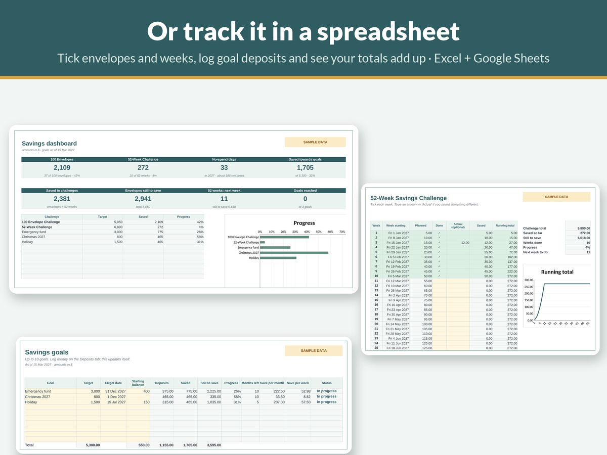

The 100 Envelope Challenge: How It Works and a Free Tracker Plan

The 100 envelope challenge is one of the most popular savings challenges online, and for good reason: it turns saving into a small game you can play every day or every week. Here's how it works, how much you'll really save, how to adjust it if money is tight, and a free plan you can follow.
How the 100 envelope challenge works
- Number 100 envelopes from 1 to 100.
- Each day (or as often as you choose), pick an envelope at random.
- Put that amount of money in it: envelope 37 means 37, envelope 4 means 4.
- When all 100 envelopes are full, you're done.
Because you pick at random, some days are easy and some are bigger. That's part of the appeal: you don't know what's coming, and the easy days balance out the hard ones.
How much do you save?
Adding up 1 + 2 + 3 … + 100 gives 5,050. A quick way to check: pair the numbers from each end (1 + 100, 2 + 99, 3 + 98 …). That's 50 pairs of 101, which is 5,050.
It works in any currency: 5,050 dollars, pounds, euros or whatever you use.
How long does it take?
- One envelope a day: 100 days, about 14 weeks. That works out to roughly 350 a week on average, which is a lot for most budgets.
- Two envelopes a week: 50 weeks, about one year. Roughly 101 a week on average.
- One envelope a week: nearly two years, about 50 a week on average.
Before you start, compare that weekly average with what your budget can actually spare. If you haven't got a budget yet, our guide to setting up a 2027 budget in 15 minutes will tell you.
Make it fit your budget
The challenge is flexible. Some popular variations:
| Version | Envelope amounts | Total saved |
|---|---|---|
| Classic | 1 to 100 | 5,050 |
| Half challenge | 1 to 50 | 1,275 |
| Small change | 0.50 to 50 (in steps of 0.50) | 2,525 |
| Double | 2 to 200 (in steps of 2) | 10,100 |
The half challenge (50 envelopes) is a great first step. It saves 1,275 in 50 days, or in about six months at two envelopes a week.
Free tracker plan: two envelopes a week for 2027
This plan finishes the classic challenge in 50 weeks, so you can start in the first week of January and be done before Christmas.
- Write numbers 1–100 on a sheet of paper or on 100 small squares.
- Each week, cross off two numbers: one from 1–50 and one from 51–100. That keeps every week between about 52 and 150, instead of an unlucky 99 + 100 in the same week.
- Move the money the same day. Real envelopes work, but a separate savings account is safer. Transfer the total and cross the numbers off.
- Write the running total at the bottom of the sheet each week. Watching it grow is the motivation.
- Plan around tight weeks. In a week with a big bill, pick two low numbers. In a payday week, pick two high ones.
- Missed a week? Don't restart. Just do two pairs the next week, or extend the challenge by a week.
Checkpoints to aim for: about 1,300 by the end of March, 2,600 by the end of June, and 5,050 by mid-December.
Envelopes or bank account?
Cash envelopes are satisfying, but a lot of cash at home is a risk, and it earns no interest. A good middle ground is to use the envelopes (or a tracker) to decide the amount, then move the money into a separate high-interest savings account. You get the game and the safety.
Tips to stay on track
- Give the money a job. An emergency fund, a holiday or next Christmas is easier to save for than "savings".
- Start the week you get paid, so the first envelopes feel easy.
- Keep the tracker where you'll see it: on the fridge, or as a pinned spreadsheet on your phone.
- Pair it with a no-spend weekend once a month to cover the bigger numbers.
Want a ready-made tracker?
You can follow the plan above with a pen and paper. If you'd rather have it done for you, our 2027 Savings Challenge Bundle on Etsy includes a printable 100 envelope chart (5,050, a 10,100 double version and your own amounts), a 52-week challenge (normal and reverse), a no-spend tracker and emergency fund trackers. There's also a Google Sheets and Excel tracker that totals everything automatically, in any currency, with A4 and US Letter printables.
To budget and save in one place, the 2027 Money Reset Bundle adds the monthly budget spreadsheet and a habit tracker.
The short version
- 100 envelopes, numbered 1–100, filled in random order, save 5,050.
- One a day takes 100 days; two a week takes a year.
- Try the 50-envelope half challenge (1,275) if the full one is too much.
- Use the tracker to pick amounts, and keep the money in a separate savings account.
This guide is general information, not financial advice.

Get the free 2027 Money Reset Starter
A one-page budget starter and a 12-week mini savings challenge, for Excel, Google Sheets or print. Free: just type 0 at checkout.
You'll also get a few short, useful emails from JulesSheets (tips and the odd offer). Unsubscribe with one click, any time. Privacy.
More guides
- How to Set Up a 2027 Budget in 15 Minutes
- A Simple Budget Template for Beginners (and How to Fill It In)
- How to Budget on an Irregular Income (A Step-by-Step Method)
- Zero-Based Budgeting Step by Step: Give Every Dollar a Job
- Sinking Funds Explained: How to Stop Big Bills Wrecking Your Budget
- How to Budget on a Low Income: A Practical, Judgement-Free Guide
- Debt Snowball vs Avalanche: Which Is Better? (With a Worked Example)
- Small Business Bookkeeping for Beginners: A Simple System for Freelancers and Sole Traders
- Wedding Budget Breakdown by Category: A Practical Starting Split
- How Much Does a Baby Cost in the First Year? How to Estimate and Plan for It
- How Much to Spend on Christmas per Child (and How to Set a Christmas Budget)
- How to Set Up a 2027 Planner You'll Actually Use
- How to Write a Resume With No Experience (With Examples)